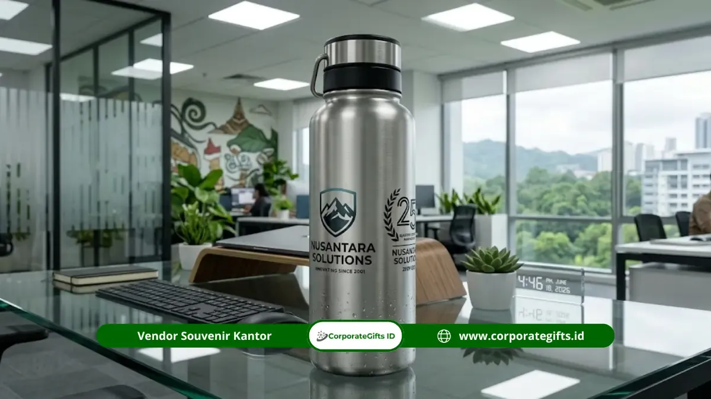

Corporate Gifts ID - Hamper custom logo anniversary untuk direksi menghadirkan perpaduan harmonis antara konsep dual branding, ukiran nama personal, dan pencocokan warna pantone resmi korporasi agar setiap cinderamata memancarkan prestise eksklusif. Personalisasi hadiah pimpinan ini dieksekusi melalui teknik presisi tinggi seperti blind embossing, laser engraving, etsa logam, hingga foilprint emas pada kurasi produk premium seperti plakat penghargaan, mug keramik, tas kulit eksekutif, dan tumbler stainless SUS304.
Langkah ini lazim diambil oleh korporasi modern, perbankan, dan BUMN yang ingin menjaga konsistensi identitas merek (brand consistency) bahkan pada bingkisan perayaan internal bagi jajaran pimpinan tertinggi. Seluruh kurasi paket siap dikonsultasikan secara fleksibel melalui katalog hampers dan parcel Corporate Gifts ID.
Poin Kunci Hamper Custom Anniversary Direksi:
- Dual Branding Sinergis: Memadukan logo utama instansi dengan grafis logo peringatan usia anniversary (misal: 25th Silver Jubilee) dalam satu kesatuan desain.
- Sentuhan Personalisasi Nama: Setiap item utama mengabadikan nama lengkap dan gelar kehormatan direksi melalui grafir laser komputer yang presisi.
- Teknik Cetak Bernilai Tinggi: Memanfaatkan embossing timbul, debossing foil emas/perak, dan laser marking anti-luntur.
- Peningkatan Kepuasan Gifting: Personalisasi bermutu tinggi terbukti meningkatkan kepuasan emosional dan apresiasi dedikasi kepemimpinan secara signifikan.
Apa Itu Hamper Custom Logo Anniversary untuk Direksi?
Hamper custom logo anniversary untuk direksi adalah bingkisan korporat eksklusif berisi aneka produk pilihan yang dirancang khusus dengan mencantumkan logo instansi, tema hari jadi, dan nama jajaran direksi. Berbeda mendasar dari parcel umum pasaran, hamper eksekutif ini diproduksi secara terkurasi dengan standar material tingkat satu, presisi warna pantone yang akurat, serta penataan kompartemen busa (EVA foam slot) yang elegan di dalam hardbox magnetik.
Pendekatan personalisasi tingkat lanjut ini menjadi wujud apresiasi tulus atas visi kepemimpinan dan dedikasi dewan direksi dalam mengawal pertumbuhan bisnis perusahaan dari tahun ke tahun.
Mengapa Personalisasi Logo Penting untuk Hamper Direksi?
Memberikan bingkisan generik tanpa identitas kepada pemangku kebijakan strategis sering kali terasa hambar dan kurang mencerminkan bobot sebuah pencapaian milestone. Personalisasi logo menghadirkan nilai pembeda yang krusial:
1. Nilai Eksklusivitas dan Peningkatan ROI Hadiah
Berdasarkan survei industri Giftpack dan Gifting 101 pada 2024, sekitar 89 persen perusahaan melaporkan bahwa program apresiasi yang disesuaikan secara personal (custom personalized gifts) memberikan dampak kepuasan dan timbal balik reputasi (ROI) yang jauh lebih tinggi dibanding hadiah konvensional tanpa branding. Hadiah yang memuat nama pribadi dan lambang institusi memberikan kebanggaan kepemilikan yang mendalam bagi penerimanya.
2. Mempertegas Posisi Representasi Resmi Korporasi
Bagi jajaran direksi dan komisaris, cinderamata peringatan anniversary bukan sekadar kenang-kenangan meja kerja, melainkan simbol representasi resmi organisasi saat mereka menerima tamu kehormatan, investor, maupun delegasi mitra bisnis di ruang kantor mereka.

Detail pengerjaan deboss logo emas dan laser engraving nama pada item hamper eksekutif CorporateGifts.ID.
10 Rekomendasi Item Hamper Custom Logo untuk Direksi
Berikut kurasi 10 item prestisius yang paling disukai untuk disematkan dalam hamper hari jadi perusahaan khusus para direktur:
- Hamper Rigid Box Dual Logo Pantone Custom: Kotak kemasan hardbox magnetik tebal berlapis kain linen yang dicetak warna pantone resmi, dihiasi hot stamping foil emas logo perusahaan dan lambang anniversary.
- Plakat Kristal Akrilik Ukir Nama Direksi: Plakat premium berdesain geometris modern dengan ukiran nama, gelar, dan masa bakti direksi sebagai wujud penghargaan formal.
- Mug Keramik Cetak Logo Embossed: Cangkir kopi keramik bertekstur matte dengan logo timbul (emboss) elegan untuk menemani agenda kerja harian di ruang direksi.
- Jurnal Kulit PU Eksklusif Sampul Deboss: Buku agenda kulit sintetis premium dengan kantong kartu nama dan sampul berlogo deboss yang rapi.
- Pin Lencana Logam Emas/Perak: Pin enamel logam lapis sepuh emas atau perak antikarat berlogo korporasi yang dapat dikenakan pada kerah jas resmi.
- Tas Kerja Kulit Eksekutif (Leather Briefcase): Tas dokumen kulit asli dengan grafir atau emboss logo halus di bagian sudut depan, memadukan fungsi utilitas tinggi dan wibawa pimpinan.
- Kotak Kayu Solid Ukir Laser: Kemasan luar berbahan kayu jati atau mahoni dengan ukiran laser relief lambang instansi yang dapat dialihfungsikan sebagai kotak penyimpanan arloji.
- Tumbler Vacuum Stainless Dual Branding: Botol minum insulasi ganda SUS304 dengan cetak logo institusi di satu sisi dan tema commemorative milestone di sisi sebaliknya.
- Kartu Ucapan Foilprint Signature Dewan Komisaris: Kartu ucapan tebal bermotif foil emas berisi pesan apresiasi personal bertandatangan resmi.
- Bingkai Foto Kayu Mewah Logo Timbal: Photo frame bertekstur kayu alami untuk memuat potret momentum anniversary bersama jajaran manajemen.
Ingin mengeksplorasi referensi bingkisan gaya hidup lainnya? Simak juga ulasan hamper lifestyle eksekutif untuk anniversary perusahaan.
Tabel Panduan Teknik Personalisasi Logo Berdasarkan Material
Memilih teknik personalisasi yang selaras dengan material dasar produk adalah kunci utama agar hasil akhir tampak mewah, tahan lama, dan tidak terkesan murahan:
| Kategori Produk | Material Dasar | Teknik Personalisasi | Kesan Visual & Keunggulan |
|---|---|---|---|
| Plakat & Trofi | Kristal optik, akrilik bening, kayu mahoni solid. | Laser Engraving 3D & Etsa Logam Kuningan. | Sangat formal, presisi tinggi, tahan gores, dan tidak akan memudar seiring berjalannya waktu. |
| Apparel & Leather Goods | Kulit sapi asli, kulit PU microfiber premium. | Blind Embossing, Debossing Gold Foil. | Mencerminkan quiet luxury, bertekstur elegan, menyatu alami dengan pori-pori kulit. |
| Kemasan Luar (Hardbox) | Greyboard tebal no. 30 lapis kertas linen/fancy paper. | Hot Stamping Foilprint & Spot UV Varnishing. | Mengilap mewah di bawah pantulan cahaya, memberikan impresi pertama yang sangat berkelas saat unboxing. |
| Drinkware & Gadget | Stainless steel SUS304 food-grade, aluminium anodized. | Fiber Laser Marking & Print UV High-Definition. | Warna tajam sesuai kode Pantone, garis logo sangat tajam, awet saat dicuci berulang kali. |
| Alat Tulis Eksekutif | Logam kuningan lapis pernis lacquer hitam/perak. | Rotary Laser Engraving untuk nama pribadi. | Sentuhan personal tingkat tinggi, simbol otoritas direktur saat penandatanganan berkas penting. |
Tips Merencanakan Hamper Anniversary Eksklusif Direksi
Agar proses pengadaan berjalan mulus tanpa kendala batas waktu, perhatikan empat langkah taktis berikut:
- Karakterisasi Material: Sesuaikan teknik logo dengan sifat fisik material; hindari sablon cat biasa pada kulit asli karena berisiko mudah terkelupas.
- Validasi Warna Pantone: Pastikan vendor memiliki sistem kalibrasi warna yang akurat agar logo perusahaan dan logo anniversary tidak meleset dari standar panduan identitas korporat (brand guidelines).
- Komposisi Dual Branding Seimbang: Tempatkan logo korporasi sebagai aksen dominan, sedangkan grafis angka anniversary berfungsi sebagai ornamen pelengkap yang menyatu anggun.
- Manajemen Waktu Produksi: Pengerjaan hamper berteknologi ukir laser, cetak mold deboss baru, dan penataan busa khusus membutuhkan waktu pengerjaan 14-25 hari kerja. Rencanakan pesanan minimal 1 bulan sebelum hari perayaan.
Pertanyaan Umum seputar Hamper Custom Logo untuk Direksi (FAQ)
Kesimpulan & Rekomendasi Pengadaan
Hamper custom logo anniversary bukan sekadar cinderamata formalitas tahunan, melainkan wujud penghormatan mendalam atas kontribusi dewan direksi dalam memajukan perusahaan. Melalui pemilihan item bernilai guna tinggi, penerapan teknik cetak yang tepat, dan kemasan rigid box yang prestisius, pesan apresiasi korporat akan tersampaikan secara elegan dan meninggalkan kesan tak terlupakan.
CorporateGifts.ID siap mendampingi kebutuhan pengadaan hampers anniversary Anda dengan jaminan kepatuhan terhadap standar brand guidelines, pengerjaan rapi, serta pengiriman aman ke seluruh Indonesia.